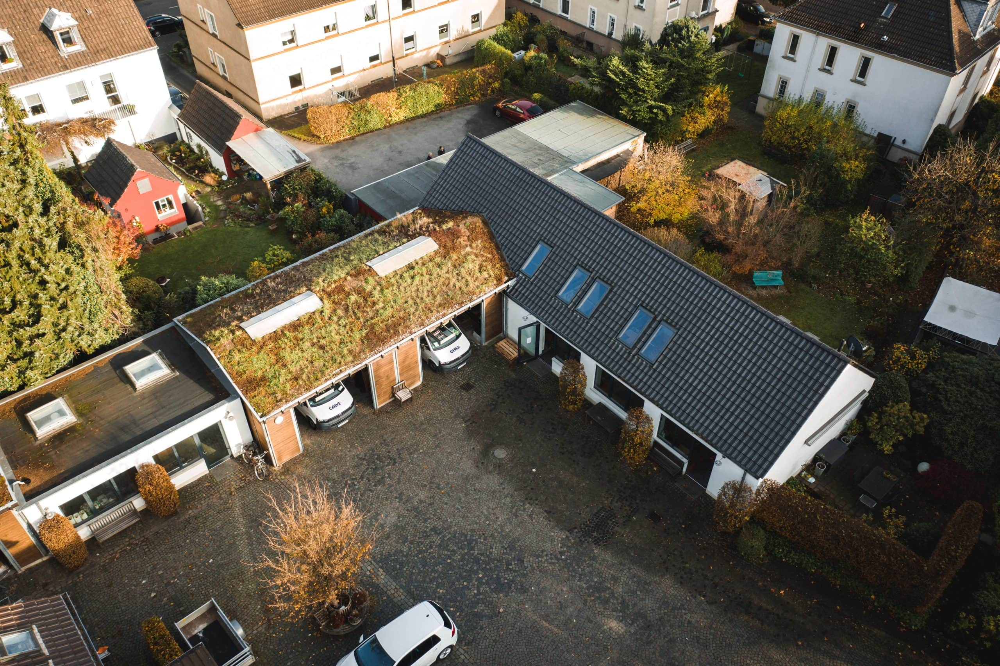
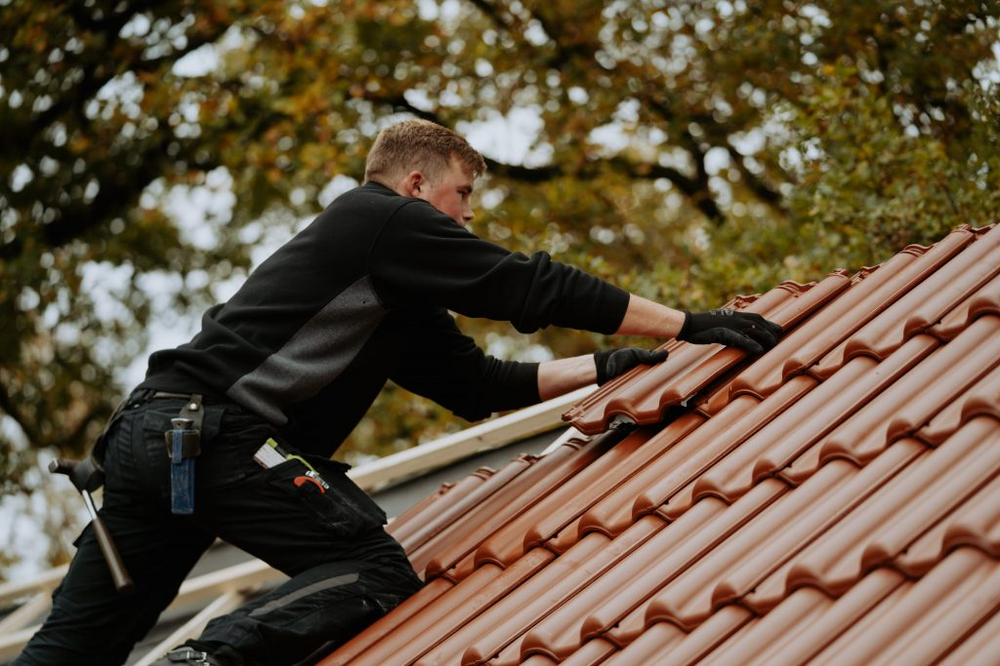
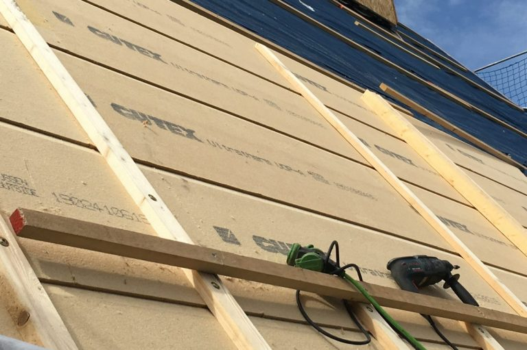
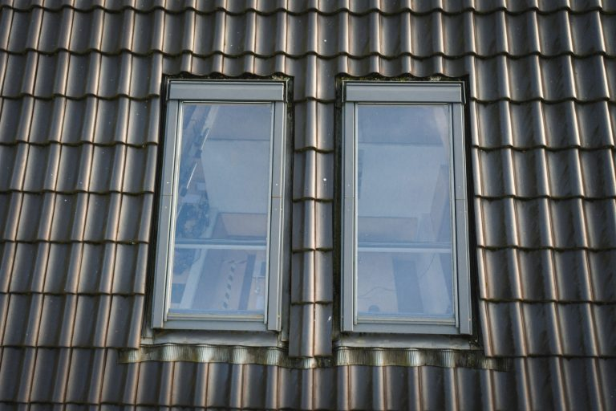
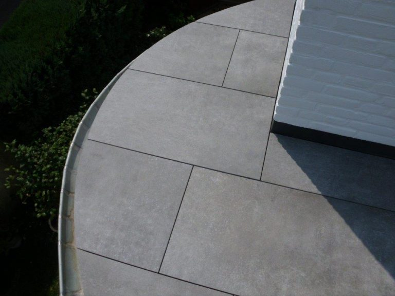
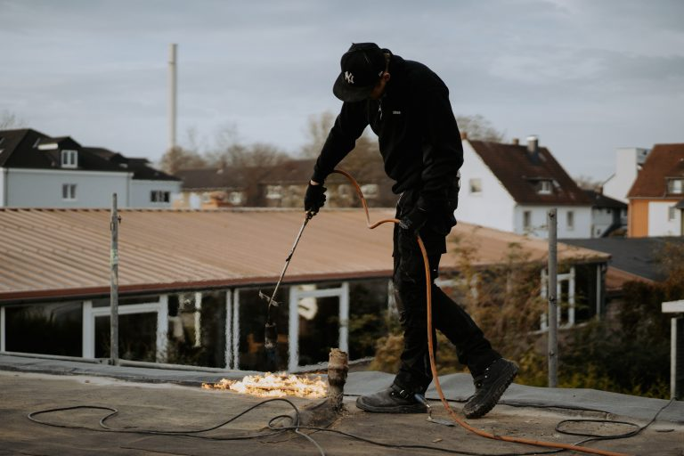
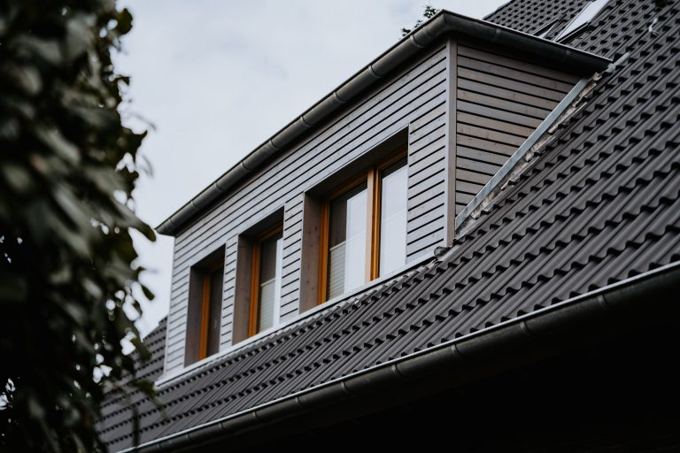
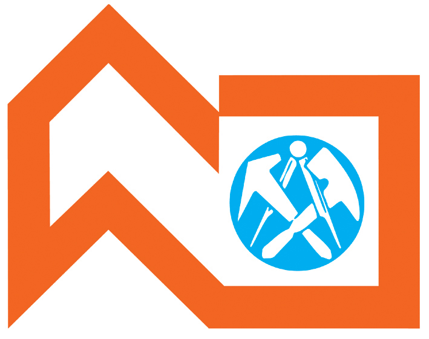

DACHDECKERHANDWERK AUS RECKLINGHAUSEN
Ihr Dach.
Unser Handwerk.
Für morgen.
Von der ersten Idee bis zum sicheren Dach. Wir verbinden das Wissen aus sechs Generationen mit den Möglichkeiten von heute.

Handwerk mit Haltung.
Wir sind ein Familienunternehmen mit
- Leidenschaft
- Meisterkompetenz
- Qualitätsanspruch
- Zuverlässigkeit
- Verbindlichkeit
- moderner Technik
WAS HABEN SIE VOR?
Das passende Handwerk.
Für Ihr Zuhause.
Von der Neueindeckung über das Schaffen von zusätzlichem Wohnraum mittels Gaubenbau bis hin zur vollständigen Photovoltaik-Anlage auf Ihrem Dach: Wir begleiten Sie von der Planung bis zur Ausführung.

01Dacheindeckungen
Ein gutes Dach beginnt mit gutem Handwerk.

02Energetische Sanierung
Heute modernisieren. An morgen denken.

03VELUX® Fenster
Neue Perspektiven für Räume unter dem Dach.
Weitere Leistungen aus unserem Portfolio
SONNE.
ZUKUNFT.Dachkompetenz trifft Solarenergie.
DAS DACH WEITERDENKEN
Da oben steckt
mehr drin.
Ein Dach kann mehr als schützen. Entdecken Sie das Solarangebot von GERKE und die Möglichkeiten für Ihr Zuhause.
GERKE SOLAR entdeckenFAMILIENUNTERNEHMEN. MEISTERBETRIEB.
Tradition im Rücken.
Zukunft im Blick.
Sechs Generationen Handwerk prägen, wie wir arbeiten: mit Können, Verbindlichkeit und einem hohen Anspruch an Qualität.
Wir pflegen traditionelles Wissen und entwickeln unser Handwerk kontinuierlich weiter. Mit moderner Technik und persönlicher Betreuung sind wir von der Beratung und Planung über die Ausführung bis zur Wartung und Reparatur für Sie da.
Unsere Geschichte kennenlernenEINBLICKE IN UNSERE ARBEIT
Was wir tun,
kann sich sehen lassen.



Einblicke in unseren Alltag.
◎ @dachdecker_gerkeAusgewählte Beiträge aus unserem Instagram-Archiv.
DER ERSTE SCHRITT ZUM GUTEN DACH
Was haben
Sie vor?
Erzählen Sie uns von Ihrem Projekt.
Wir freuen uns darauf, Sie kennenzulernen.
GUTES HANDWERK.
STARKE VERBINDUNGEN.
